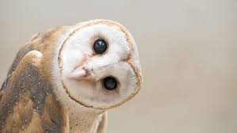
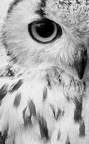
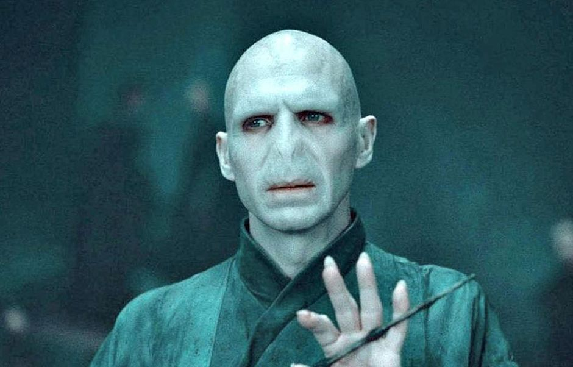

Vamos botar coruja no mundo
As corujas são animais maravilhos, belos e inteligentes...Mas Valdemort preferia cobras a corujas.
Fonte: Wikiwiki Para saber mais, clique aqui

Coruja curisoa

Coruja desconfiada
.jpg "Coruja3")
Coruja atenta
